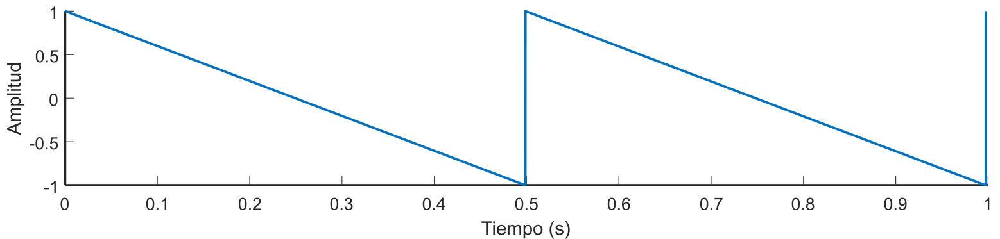
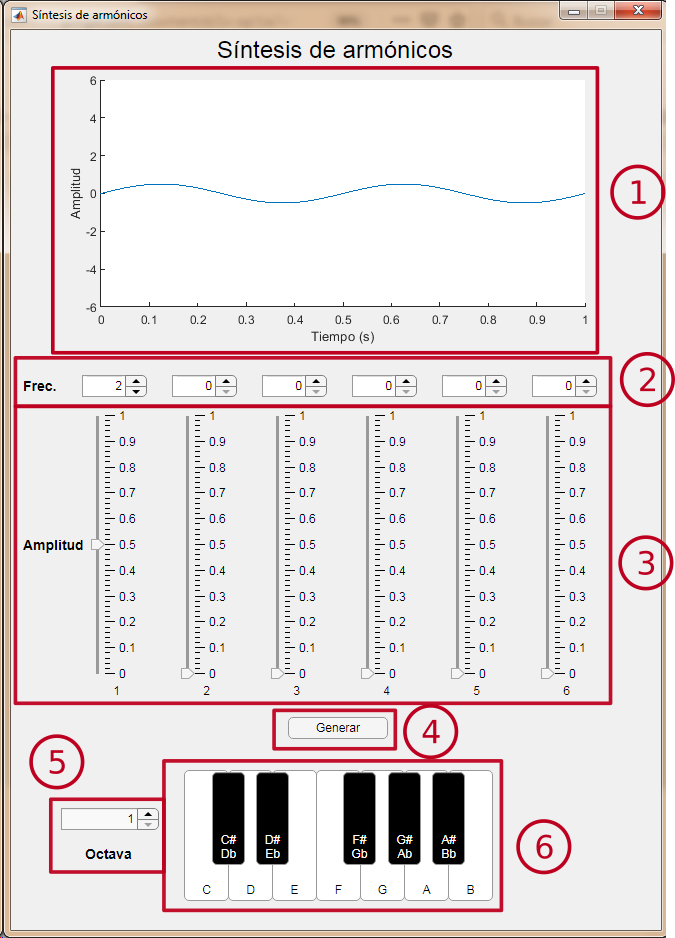
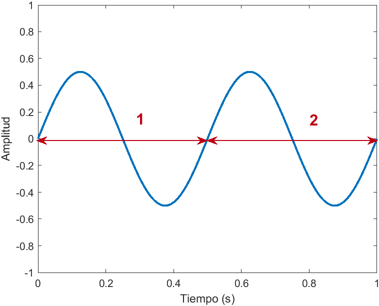
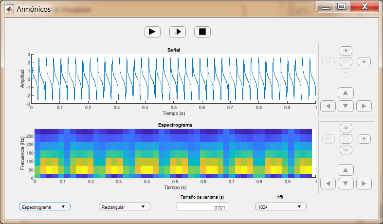
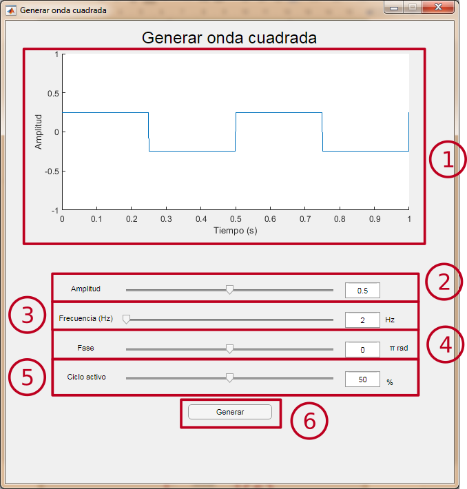
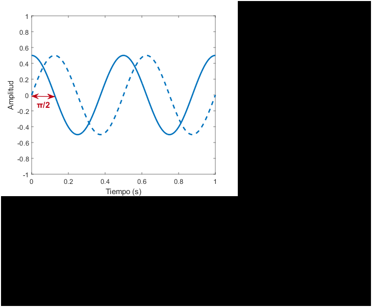

Generar tono puro
Interfaz

- Ventana de previsualización: Permite ver la señal que generará el módulo. Se actualiza al cambiar el valor de algún parámetro.
- Selector de amplitud: Permite variar la amplitud del seno entre 0 y 1. El valor se puede cambiar deslizando el cursor o modificando el valor de la caja de texto.
- Selector de frecuencia: Permite variar la frecuencia del seno entre 1 y 20000 Hz. El valor se puede cambiar deslizando el cursor o modificando el valor de la caja de texto.
- Selector de fase: Permite variar la fase del seno entre −π y π radianes. El valor se puede cambiar deslizando el cursor o modificando el valor de la caja de texto.
- Botón generar: Abre una nueva ventana de visualización para observar una señal con los parámetros seleccionados, de 1 segundo de duración.
- Expresión: Muestra la expresión matemática de la señal con los parámetros seleccionados. Se actualiza al cambiar el valor de algún parámetro.
Tono puro
Un tono puro es una señal sinusoidal que tiene una única frecuencia. En este módulo se genera utilizando la función seno, y se expresa mediante la siguiente fórmula:
A sin(2πft + 𝜙),
siendo A la amplitud, f la frecuencia y 𝜙 la fase.
- Amplitud: Valor máximo de la señal.
 |
En este ejemplo la amplitud es 0.5. |
- Frecuencia: Número de veces que se repite un ciclo entero de la señal dentro de una unidad de tiempo. Medido en Hercios (Hz) es el número de veces que se repite un ciclo de la señal en 1 segundo.
 |
En este ejemplo la frecuencia es 2 Hz. |
- Fase: Desplazamiento del seno. Se mide en radianes, siendo 2π radianes un ciclo completo de la señal.

|
En este ejemplo la señal está desplazada ¼ de ciclo, por lo que la fase es π/2 rad. |
Síntesis de armónicos
Este módulo permite generar hasta seis tonos puros superpuestos, cada uno de diferente frecuencia y amplitud. El teclado de la parte inferior permite seleccionar una nota para observar sus seis primeros armónicos.
Interfaz

- Ventana de previsualización: Permite ver la señal que generará el módulo. Se actualiza al cambiar el valor de algún parámetro.
- Selector de frecuencia: Permite seleccionar la frecuencia de cada una de las seis componentes. Se puede seleccionar escribiendo en la caja de texto o clicando sobre las flechas.
- Selector de amplitud: Permite seleccionar la amplitud de cada una de las seis componentes. Se puede seleccionar desplazando el cursor.
- Botón generar: Abre una nueva ventana de visualización para observar una señal con los parámetros seleccionados, de 1 segundo de duración.
- Octava: Permite seleccionar la octava de las notas del teclado.
- Teclado: Permite seleccionar una nota. Al seleccionar una nota, se le asignará a cada una de las seis componentes las frecuencias de sus seis primeros armónicos, con una amplitud predeterminada.
Armónicos
Los armónicos son tonos puros adicionales que surgen de forma natural al emitir una nota. La frecuencia de cada uno viene determinada por el producto de la frecuencia fundamental (frecuencia de la nota emitida) y un número natural (1, 2, 3, 4...).
En función de la amplitud que tengan cada uno de sus armónicos, el timbre del sonido cambia.
De esta forma, los armónicos de un Do3 (130.813 Hz) son los siguientes:
Orden del armónico | Frecuencia (Hz) | Nota |
1 (Frecuencia fundamental) | 130.813 | Do3 |
2 | 130.813 · 2 = 261,626 | Do4 |
3 | 130.813 · 3 = 392,439 | Sol4 |
4 | 130.813 · 4 = 523,252 | Do5 |
5 | 130.813 · 5 = 654.065 | Mi5 |
6 | 130.813 · 6 = 784,878 | Sol5 |
7 | 130.813 · 7 = 915,691 | Sib5 (desafinado hacia abajo) |
... | ... | ... |
Generar onda cuadrada
Este módulo permite generar una señal de onda cuadrada de un segundo de duración, con la posibilidad de modificar los parámetros de amplitud, frecuencia, fase y ciclo activo.
Interfaz

- Ventana de previsualización: Permite ver la señal que generará el módulo. Se actualiza al cambiar el valor de algún parámetro.
- Selector de amplitud: Permite variar la amplitud de la onda cuadrada entre 0 y 1. El valor se puede cambiar deslizando el cursor o modificando el valor de la caja de texto.
- Selector de frecuencia: Permite variar la frecuencia de la onda cuadrada entre 1 y 20000 Hz. El valor se puede cambiar deslizando el cursor o modificando el valor de la caja de texto.
- Selector de fase: Permite variar la fase de la onda cuadrada entre −π y π radianes. El valor se puede cambiar deslizando el cursor o modificando el valor de la caja de texto.
- Selector de ciclo activo: Permite variar el ciclo activo de la onda cuadrada entre el 10 % y el 90 %.
- Botón generar: Abre una nueva ventana de visualización para observar una señal con los parámetros seleccionados, de 1 segundo de duración.
Onda cuadrada
Una onda cuadrada es una onda periódica que se forma mediante transiciones instantáneas entre dos niveles.
Los parámetros configurables son los siguientes:
- Amplitud: Diferencia entre los dos niveles.
 |
En este ejemplo la amplitud es 1. |
- Frecuencia: Número de periodos en 1 segundo, medido en Hz. (Para más información, pulsa aquí).
- Fase: Desplazamiento de la señal con respecto a su posición original. (Para más información, pulsa aquí).
- Ciclo activo: Parte del periodo en la que la señal se encuentra en el nivel superior (o nivel activo). En este caso se mide en un porcentaje respecto a la duración total del periodo.